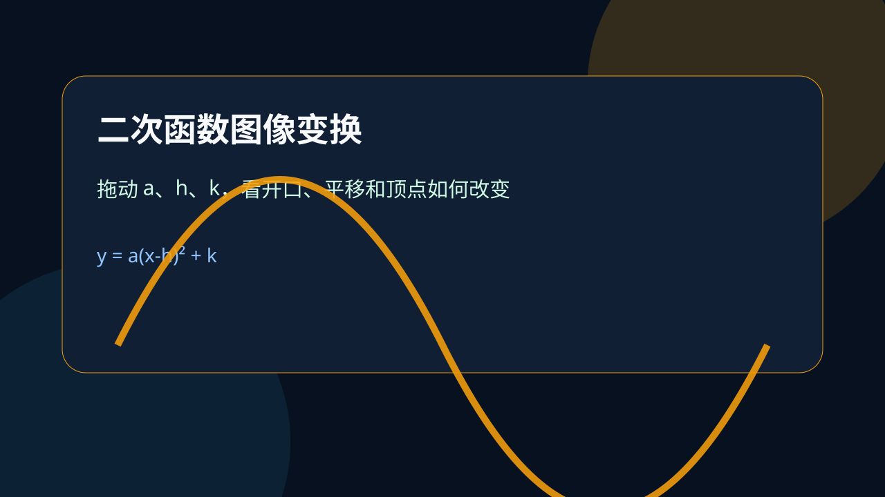
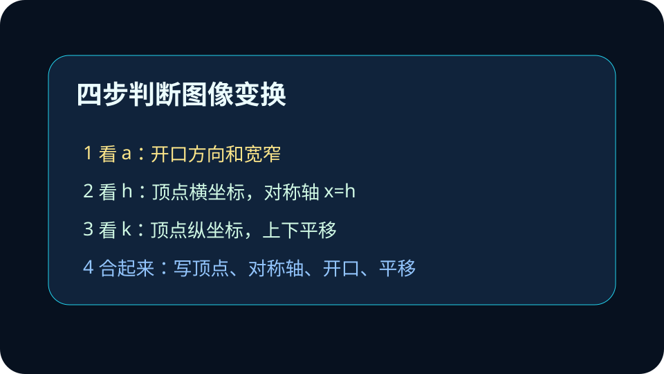
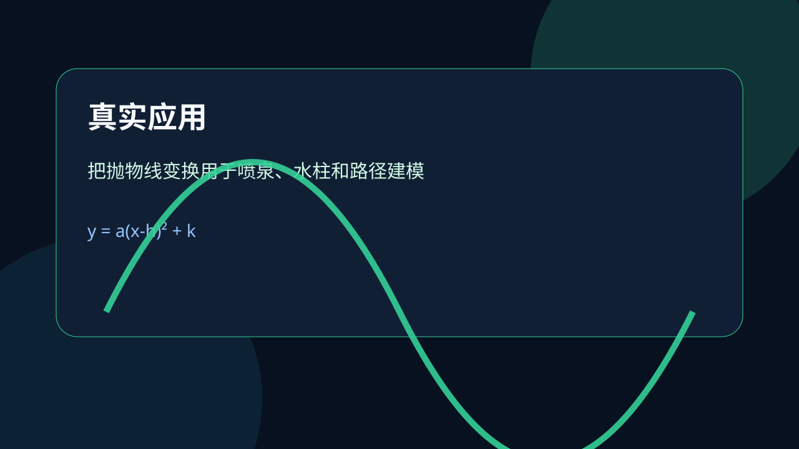

为什么 (x-h) 里是减 h，图像却向右移动 h？答案在顶点。

已经知道：你见过 y=x² 的抛物线，也知道它的顶点在原点，开口向上。
但问题是：题目常给 y=a(x-h)²+k，要求判断平移、顶点、对称轴和最值。很多同学会把 h 的方向记反。
所以学：本课不从口诀出发，而从顶点出发：顶点从 (0,0) 到 (h,k)，整条抛物线就跟着移动。只要抓住顶点，左右平移就不会再混乱。
函数 y=(x-3)²+2 的顶点是多少？
选择后显示错因诊断。
定义为：二次函数顶点式 y=a(x-h)²+k 中，顶点是 (h,k)，对称轴是 x=h。a 决定开口方向和宽窄。
为什么减 h 反而向右：要让平方项为 0，必须 x-h=0，所以 x=h。图像最低点或最高点出现在 x=h，而不是 x=-h。
会用配方法将数字系数二次函数的表达式化为 y=a(x-h)²+k 的形式，能由此得出二次函数图象顶点坐标，说出图象开口方向，得出最大值或最小值，并能确定相应自变量的值，解决简单的实际问题。
把括号里的 x-3 看成“减 3 所以左移”，这是把表达式操作和图像位置混在一起了。正确方法是先求顶点。
第一步，看 a：a>0 开口向上，a<0 开口向下，|a| 越大开口越窄。第二步，看 h：顶点横坐标是 h，整条图像左右移动。第三步，看 k：顶点纵坐标是 k，整条图像上下移动。不要把这三件事混在一起。

在 GeoGebra 中输入 y=(x-3)^2+2、y=-2(x+1)^2-4，对照本课 Canvas 模型，检查顶点和开口是否一致。
拖动后，先说顶点，再说开口，最后说平移。
顶点从 (0,0) 移到 (3,2)，所以图像向右平移 3 个单位，向上平移 2 个单位。a=2>0，开口向上，且比 y=x² 更窄。完整答案要包含顶点、对称轴、开口和平移过程，不能只写“右 3 上 2”。

把 y=x² 平移得到 y=(x+4)²-1，平移方式是？
选择后显示错因诊断。
“左加右减”只是压缩口诀，不是理解本身。检查方向时，先让括号里的平方项等于 0。例如 x+4=0，所以 x=-4，顶点横坐标是 -4，图像向左移动。这个过程能解释口诀，也能防止在复杂题中误判。
一般式 y=ax²+bx+c 能计算函数值，但顶点和对称轴不够直观。配方法的作用，是把隐藏在一般式里的顶点信息提取出来。例如 y=2x²-8x+5，可以先提出 2，得到 2(x²-4x)+5；再把 x²-4x 配成 (x-2)²-4；最后得到 y=2(x-2)²-3。此时顶点、对称轴、最值都直接可读。配方不是多余步骤，而是把代数式翻译成图像语言。 检查结果时，还要把顶点代回原函数，确认两种表达式给出的函数值一致。这样可以避免配方时常数项漏乘 a 的错误，也能帮助你在图像和代数之间来回验证。
判断左右平移时，不要把括号里的符号当成移动方向，而要问“什么时候平方项等于 0”。例如 y=(x-3)²+2 中，x-3=0 得到 x=3，所以顶点横坐标是 3。顶点从 (0,0) 移到 (3,2)，这才是向右 3、向上 2 的真正原因。这个解释比口诀更可靠，因为遇到 y=(x+4)²-1 时，同样可以通过 x+4=0 得到顶点横坐标 -4。
a 控制形状，决定开口向上还是向下，以及抛物线宽窄；h 控制横向位置，直接给出顶点横坐标；k 控制纵向位置，直接给出顶点纵坐标。做题时先把三件事分开，再合并表达。若把 a、h、k 一起看，很容易把“开口变窄”和“平移位置”混在一起。正确流程是：先写顶点，再写对称轴，再描述开口，最后说平移。
错答案常写成：“y=(x-3)²+2 是左移 3 上移 2。”这个错误来自只看括号里的减号。修复时要补上推理链：令 x-3=0，得 x=3，所以顶点是 (3,2)，对称轴是 x=3；与 y=x² 的顶点 (0,0) 相比，图像向右平移 3 个单位、向上平移 2 个单位。这样的答案同时包含计算依据和图像解释。
设计一个喷泉水柱模型 y=a(x-h)²+k，要求顶点高度为 5，水柱落点在地面。写出你选择的 a、h、k，并解释这些参数的现实意义。答案至少包含顶点、开口方向、对称轴和落点解释。
提交后检查是否包含顶点、开口、对称轴和现实意义。
判断 y=-2(x-1)²+3 的图像信息。
选择后显示反馈。